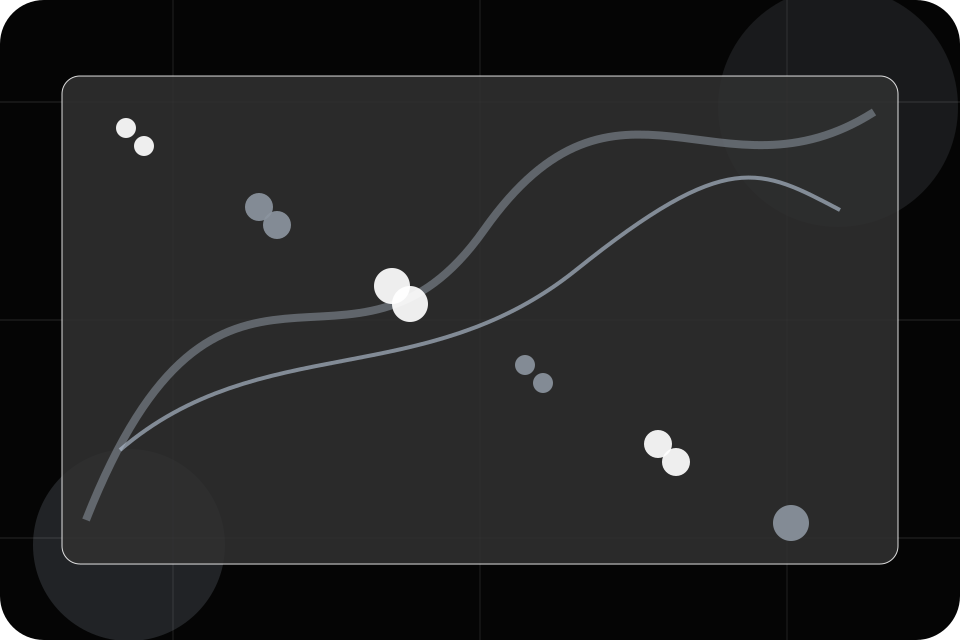
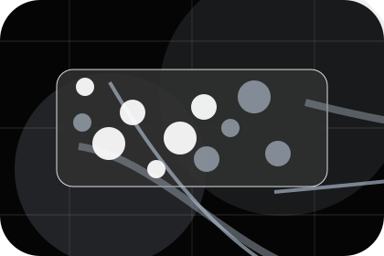
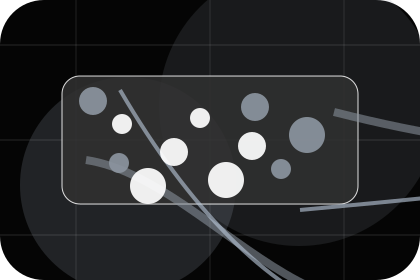
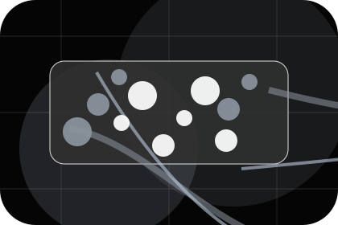
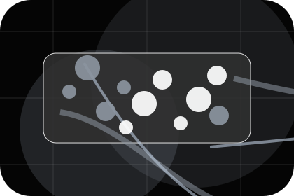
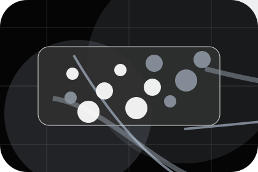
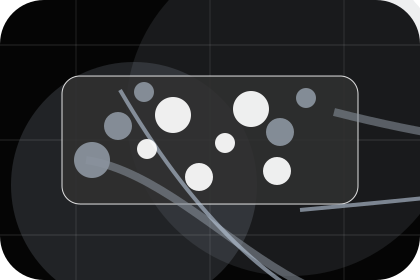
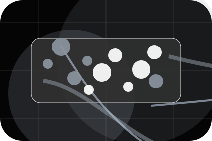
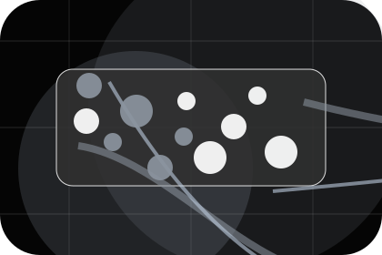
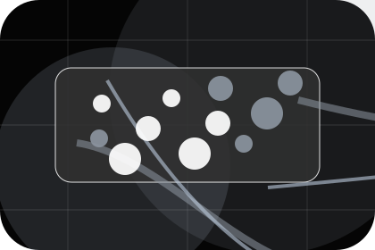

Guide
A useful entry point for visitors who need more context before they check coverage.
Guides / 01
Guides opens as a clear telecommunications decision hub: what Signal offers, who it helps, why it matters, and which route to take first.
The first screen combines positioning, proof, primary action, and fast internal navigation, so people can act immediately or compare the rest of the guides route with context.
Black full-bleed coverage hero
Select the closest route and Signal keeps the next step, proof, and follow-up expectation aligned with availability and reliability.

Guides / 02
WiFi gives researching visitors a practical route into guides, checklists, and comparison material without leaving the site structure.
Each resource behaves like a useful internal link, giving cold and warm visitors a way to learn, compare, and return to the action path.
Explore Guides

A useful entry point for visitors who need more context before they check coverage.
Guides / 03
Security gives the proof layer for guides: standards, evidence, and reassurance that make the next decision feel grounded.
Instead of relying on vague claims, Signal presents visible standards, process cues, and proof artifacts that help telecommunications visitors judge fit.
Explore GuidesVisible proof that helps visitors believe the claims behind security.

The quality, safety, or operating expectation this section makes explicit.

What becomes clearer before someone decides whether to check coverage.
Guides / 04
Remote gives researching visitors a practical route into guides, checklists, and comparison material without leaving the site structure.
Each resource behaves like a useful internal link, giving cold and warm visitors a way to learn, compare, and return to the action path.
Explore GuidesA useful entry point for visitors who need more context before they check coverage.
A scannable comparison aid that makes research usable before the next decision.
A route back to support, services, or contact when the visitor is ready to act.
Guides / 05
Routers gives researching visitors a practical route into guides, checklists, and comparison material without leaving the site structure.
Each resource behaves like a useful internal link, giving cold and warm visitors a way to learn, compare, and return to the action path.
Explore GuidesA useful entry point for visitors who need more context before they check coverage.
A scannable comparison aid that makes research usable before the next decision.
A route back to support, services, or contact when the visitor is ready to act.
Guides / 06
Speed shows what changes after the work: clearer decisions, visible progress, and proof points that connect the offer to real outcomes.
The layout connects before-and-after thinking with measured outcomes, making the result easy to scan without promising what the business cannot guarantee.
Explore GuidesThe uncertainty, delay, or missed opportunity visitors bring into speed.
The clearer, safer, or more valuable state Signal is designed to support.
The visible cue that connects speed to a believable decision, not a loose claim.
Guides / 07
Advice gives researching visitors a practical route into guides, checklists, and comparison material without leaving the site structure.
Each resource behaves like a useful internal link, giving cold and warm visitors a way to learn, compare, and return to the action path.
Explore Guides

A useful entry point for visitors who need more context before they check coverage.
Guides / 08
Updates gives researching visitors a practical route into guides, checklists, and comparison material without leaving the site structure.
Each resource behaves like a useful internal link, giving cold and warm visitors a way to learn, compare, and return to the action path.
Explore GuidesA useful entry point for visitors who need more context before they check coverage.

A scannable comparison aid that makes research usable before the next decision.

A route back to support, services, or contact when the visitor is ready to act.
Guides / 09
Articles gives researching visitors a practical route into guides, checklists, and comparison material without leaving the site structure.
Each resource behaves like a useful internal link, giving cold and warm visitors a way to learn, compare, and return to the action path.
View ResourcesA useful entry point for visitors who need more context before they check coverage.
A scannable comparison aid that makes research usable before the next decision.

A route back to support, services, or contact when the visitor is ready to act.
A useful entry point for visitors who need more context before they check coverage.
Open resourceA scannable comparison aid that makes research usable before the next decision.
Open resourceA route back to support, services, or contact when the visitor is ready to act.
Open resourceInformation is provided for planning and should be reviewed for the final client, location, and operating rules.